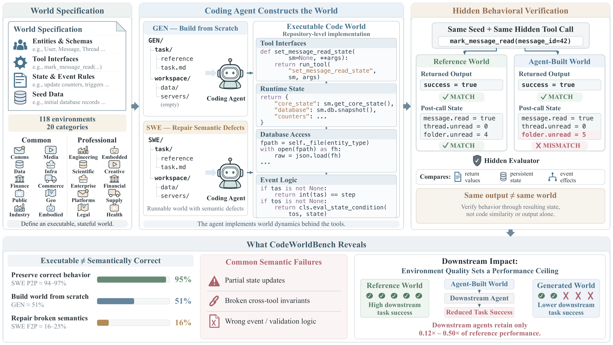

Execution-based benchmark · code-driven world construction
Agents emit runnable repositories routinely. CodeWorldBench asks the harder question: does the world they build transition the way its specification says it should?
GEN is the construction pass rate over all 118 environments — the macro-average of per-environment case pass rates, so every environment counts equally. Scroll right for all 20 domain categories; rank and model stay pinned.
Loading results…
OpenAI models run under Codex v0.154.0, every other model under Claude Code v2.1.251. Green marks the best value in a column; click any score header to re-sort. The two category taxonomies are disjoint — a common code scores only the 50 common environments, a professional code only the 68 professional ones — so those columns are the paper's per-subset numbers unchanged. Category codes spell out the domains; full tables add the SWE pass-to-pass and fail-to-pass rates per subset.
Keeping already-correct behavior alive averages 96.5 on common and 94.0 on professional. Repair of broken behavior averages 16.5 and 25.2. A protocol that scores only surviving tests would miss the entire gap.
The best professional repair rows are Qwen3.8-27B (45.3 and 44.9), above every closed-source model — yet those same rows rank twelfth and seventh on construction. The two settings measure different capabilities.
Generated repositories pass structural setup and then mismanage state: stale counters, shallow success envelopes, inconsistent views. Agents build first and validate transition rules later, or never.
Reference and submitted worlds start from the same seed, receive the same hidden tool calls, and are compared on their outputs and their resulting states. A repository that answers plausibly while mutating state incorrectly does not pass.

Implement the world from scratch in a workspace holding initial data and tool documentation. Graded on the full verified surface.
Fix a runnable but semantically broken implementation without regressing behavior that already works. Scored as P2P and F2P separately.